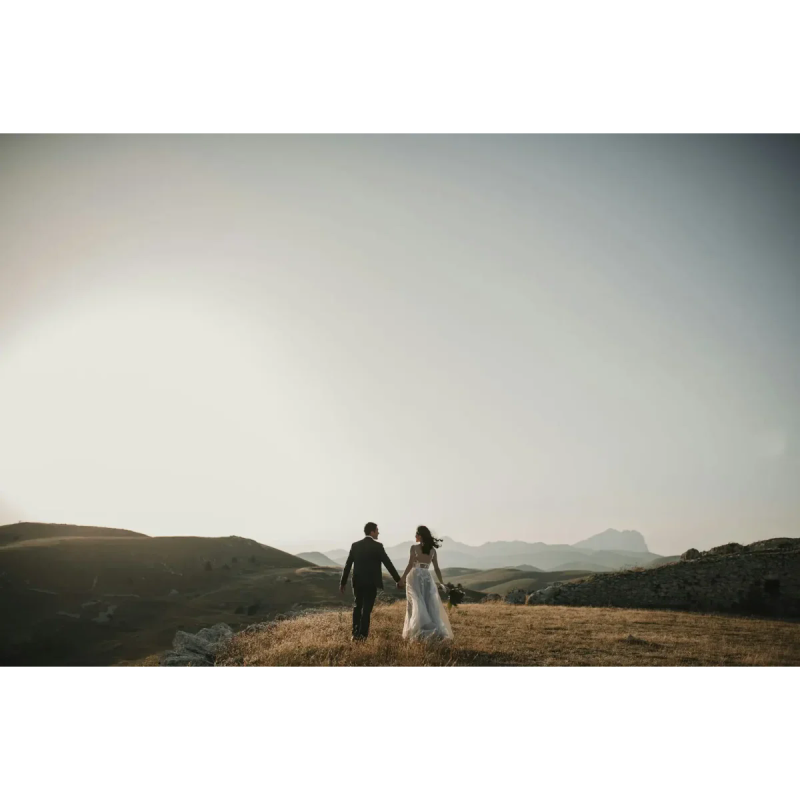
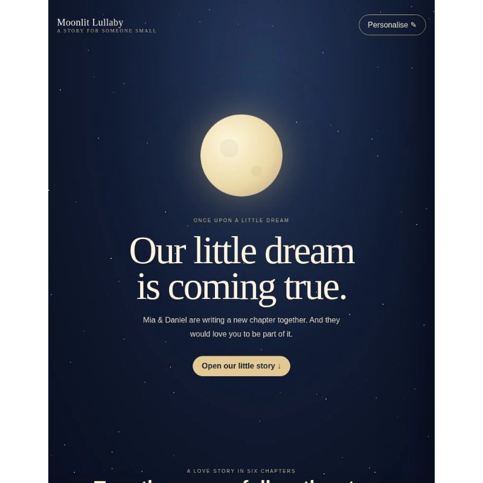

VraxisRSVP
Interactive invitations, personalised event websites and RSVP workflows.
JavaScript · Supabase · CloudflareSOFTWARE DEVELOPMENT / DIGITAL PRODUCTS
I turn curiosity into software that works for real people.
Enter the exhibition ↘WHAT DRIVES THE WORK
Software is a way to turn an idea into something people can use. I explore the problem, build the system, and keep refining the experience.
My projects span web applications, backend services, automation and mobile games.
See how I work ↘Four different problems.
Four different systems.
Explore the products from the inside out.



Interactive invitations, personalised event websites and RSVP workflows.
JavaScript · Supabase · CloudflareRole-aware ministry operations, training and campus administration.
JavaScript · PostgreSQL · SupabaseTemporary, one-time file and text transfers between devices.
Python · Flask · SQLAlchemy · SQLiteA published Android football career simulation.
React · TypeScript · Capacitor · ZustandMaintained website availability, managed domain registrations, troubleshot connectivity and built Zapier workflows.
Choose a technology to see how it connects to my projects. No arbitrary skill ratings.
Client-side logic and interactive applications.

I got my first laptop near the end of Grade 11. By Grade 12, I was building a marks calculator.
Born in the Democratic Republic of the Congo and raised in Kimberley, I learned a great deal through self-directed exploration. Today, I'm studying software development part-time and building practical digital products.
“When the going gets tough, the tough get going.”
Outside technology, I enjoy sports and serve as a small-group leader in my community.
THE NEXT THING STARTS HERE.